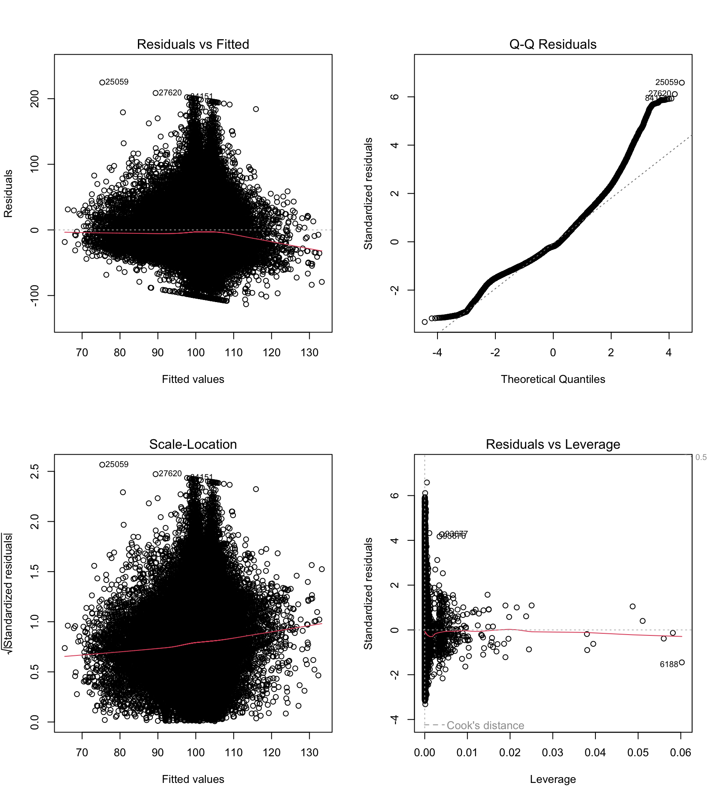
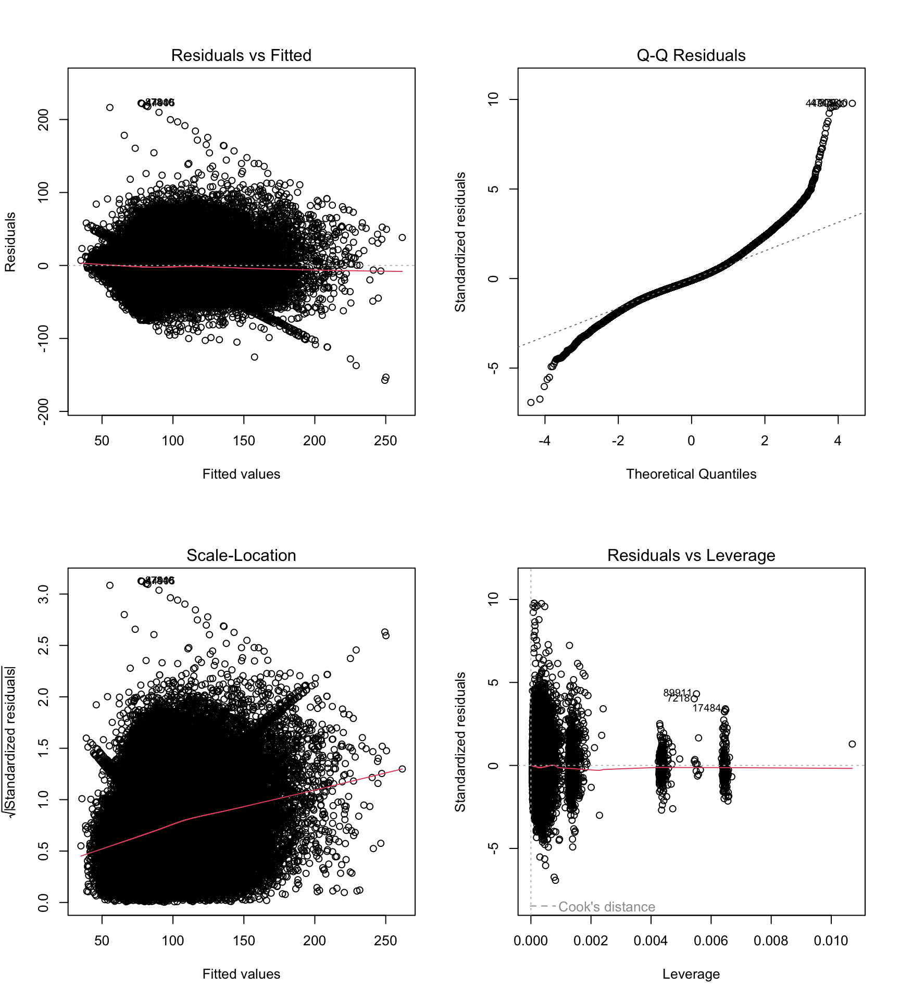
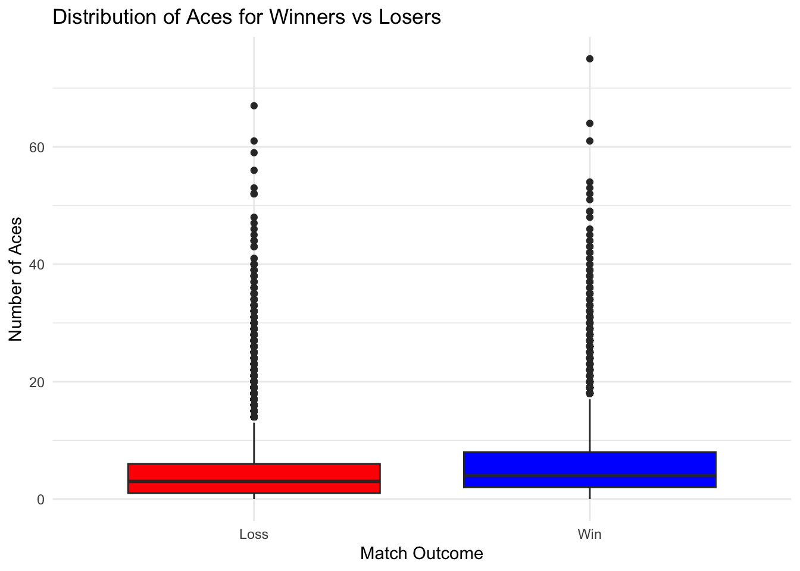

| Variable | Minimum | Quantile.1 | Mean | Median | Quantile.3 | Maximum |
|---|---|---|---|---|---|---|
| minutes | 0 | 74 | 100.490937 | 94 | 123 | 4756 |
| rank | 0 | 98 | 268.974804 | 200 | 343 | 2257 |
| aces | 0 | 2 | 4.745965 | 4 | 7 | 75 |
Study of tennis performance on different surfaces and factors that affect wins
2024-12-15
Abstract
This study explores how player rankings and aces affect tennis match outcomes using the Association of Tennis Professionals (ATP) data. The first research topic examines the impact of ranking differences on match duration. The research then evolves to investigate the relationship between the number of aces by a tennis player and that player’s odds of winning.
Methodology to the study includes exploratory data analysis combined with linear and logistic regression models, supported by visualizations. These findings highlight the connection between player rankings, aces, and match outcomes, while emphasizing the interactive impact of surface type.
Results show that larger ranking gaps lead to shorter matches, though surface type and match conditions also influence duration. Additionally, the findings indicate that hitting more aces improves the odds of winning, with surface types like clay and hard courts playing a significant role in this relationship.
Introduction
A substantial body of research has explored the prediction of tennis match outcomes using statistical models, highlighting the importance of player attributes and match statistics. Early studies, such as those by Newton and Keller (2005)[2], O’Malley (2008)[3], and Riddle (1988)[4], demonstrate that under the assumption of independent and identically distributed (iid) point outcomes on a player’s serve, the probability of winning a match can be derived from the probabilities of winning points on serve.
Kovalchik (2016) [5] conducted a comparison of 11 published tennis prediction models, categorizing them into three classes: point-based models relying on the iid assumption, regression-based models, and paired comparison models. The study found that while point-based models had lower accuracy and higher log loss, regression and paired comparison models generally outperformed them.
Methods
Data and preprocessing
The dataset utilized in this study is the Tennis ATP Dataset curated by Jeff Sackmann (Sackmann, 2021) [1]. This dataset serves as a comprehensive repository of professional tennis data, encompassing a wide range of player information, historical rankings, match outcomes, and statistical metrics. Specifically, it includes a player file containing detailed biographical data, such as unique player identifiers, names, handedness, birth dates, nationalities, and physical attributes like height. Additionally, ranking files provide a historical record of ATP rankings over time, while the results file covers match outcomes across tour-level, challenger, and futures events. This dataset forms a robust foundation for exploring various aspects of professional tennis performance and trends.
The dataset selected includes ATP match data from 2014-2024, the subset chosen are challenger matches and professional and tournament class A such as Davis Cup, Roland Garros and others. The records from this period consist in 116,103 matches where each match has 49 variables.
The initial collection of data contains features at the match level, therefore it has information from the winner player and the loser player. In order to analyze the effect of match win this structured has been modified to portray the results at the player level, including both win and loss outcomes.
In order to improve the quality of the data, those players that do not have a rank and rank points have been set to zero as the data dictionary explains that unranked players are new to these tournaments. To handle missing values in height, an imputation technique is used where player height is estimated using the average of the country of birth of the player.
Furthermore, rows where the number of aces played is missing have been removed as this is key information in our research questionanalyzing that matches whose number of aces for the winner nor the loser are missing lack all the statistical information from the the other aspects of the match therefore those records have been filtered. The same rationale applies to the serving games as it signals records that have missing information overall therefore those records have been filtered out from the analysis data.
Lastly, for highly correlated information, ratios have been computed to continue to capture granularity in information, but also reduce the number of variables needed in any model, minimizing multicollinearity.
On the other hand to assess the effect of factors on the match length, missing values in the dataset were adrressed to prepare for further analysis. Group-wise imputation was performed based on the surface type: missing player heights were replaced with the average height for that surface, and missing match durations were replaced with the median duration for that surface. This approach ensured that missing data was filled in a way that preserved context and prepared the dataset for modeling.
Moreover, the difference in the number of aces, rankings, and ranking points between the winner and loser was calculated. These perfomance metrics aim to provide more tangible and interpretable predictors for the model by focusing on measurable aspects of the players performance. Grouping variables into performance metrics also helps to frame the analysis in a way that aligns with the context of the sport and makes the regressors more meaningful and insightful.
Finally, rows with missing values for match duration (our target variable) were removed since only 8% of the data was affected. This approach is acceptable because the missing proportion is relatively small, and our target variable needs to be complete for modeling purposes.
Variable selection
Taking as reference previous research regarding the most relevant features involved in the outcome of a tennis match (Newton et al., 2005[1]; O’Malley 2008[2]; Kovalchik, 2016) a pre selection was made observing the limitation of the available data. In order to further refine the process of feature selection exploratory data analysis was conducted using correlation plots, box plots and scatterplots.
Modeling and evaluation
The present study focuses on the effects of the duration of a match using linear regression to evaluate inference capabilities and determining the principal factors for a match win using logistic regression to evaluate the probability of a win. Variance Inflation Factor (VIF) was used to test multi-colinearity. For the linear regression task the assumptions for the model are tested via residual vs fitted plots and normal q-q plots, furthermore, the performance of the model is evaluated using the adjusted r squared metric. In terms of logistic regression, accuracy, recall sensitivity and specificity are used to evaluate the model. Lasso Regularization is implemented to prevent overfitting of the model due to too many variables. The AIC score is also used to evaluate the model, incorporating the number of predictors into the overall score.
Results
Overview of key variables of interest
The dataset has a fairly even distribution of players that Win (101746) and Lose (111621), implying that there would not be more information gain in one outcome over the other. The surface types do not have as balanced of a distribution. Majority of the matches are played on a Hard or Clay surface, accounting for 53.5% and 41.1% of the matches. About 5% of the matches are played on Grass and only 0.2% on Carpet. Below we consider the distribution of the key continuous variables:
Research question 1: Effects of the difference in ranking over the length in minutes for a tennis match
Below is the linear regression analyzing the relationshiop between minutes, surface and ranking differences amongst players
\[ minutes = β0 +β1⋅(difference) + β2⋅surface + β3(difference*surface) + ϵ \]
Call:
lm(formula = minutes ~ diff_rank * surface, data = tennis)
Residuals:
Min 1Q Median 3Q Max
-113.273 -23.769 -6.455 19.352 224.685
Coefficients:
Estimate Std. Error t value Pr(>|t|)
(Intercept) 93.164377 2.108913 44.176 < 2e-16 ***
diff_rank -0.012734 0.005621 -2.265 0.02349 *
surfaceClay 11.007736 2.115392 5.204 1.96e-07 ***
surfaceGrass 11.625079 2.158509 5.386 7.23e-08 ***
surfaceHard 6.708298 2.113904 3.173 0.00151 **
diff_rank:surfaceClay -0.003546 0.005649 -0.628 0.53012
diff_rank:surfaceGrass -0.006105 0.005993 -1.019 0.30839
diff_rank:surfaceHard -0.002185 0.005642 -0.387 0.69853
---
Signif. codes: 0 '***' 0.001 '**' 0.01 '*' 0.05 '.' 0.1 ' ' 1
Residual standard error: 34.13 on 111528 degrees of freedom
(4514 observations deleted due to missingness)
Multiple R-squared: 0.02066, Adjusted R-squared: 0.0206
F-statistic: 336.1 on 7 and 111528 DF, p-value: < 2.2e-16Initially, the goal was to explore the relationship between match duration (minutes) and a limited set of predictors, specifically the difference in rankings and the interaction with surface type. However, the adjusted R² of the initial model was quite low (R² = 0.02), indicating that the predictors explained only a small fraction of the variation in match duration. This suggests that there are likely other important factors influencing the outcome that were not accounted for in the model.
To address this limitation, a second approach was taken to include additional variables in the model, particularly player performance metrics and other contextual factors. The rationale was that these additional predictors might capture more of the complexity and variability inherent in match durations, thereby improving the model’s explanatory power and increasing the adjusted R². This step aims to make the model more robust and reflective of the factors that influence match duration.
Below is the diagnostic plot for the first linear model.

The residual diagnostics reveal some violations of the linear regression assumptions, albeit less severe compared to the second model. The “Residuals vs Fitted” plot still shows signs of non-linearity, indicating the model may not adequately capture all patterns in the data. The “Q-Q Residuals” plot suggests moderate deviations from normality, particularly in the tails, which could affect hypothesis testing but to a lesser extent than the expanded model. The “Scale-Location” plot exhibits slight heteroscedasticity, where the variance of residuals increases with fitted values, suggesting the model’s predictions may not be equally reliable across all ranges. These issues indicate that while the model may be simpler, its assumptions are not entirely satisfied, and its reliability could still be questioned despite fewer violations (compared to the 2nd model, see below).
Below is the linear regression analyzing the relationshiop between minutes and a multitude of regressors
The second regression model was designed to address the low explanatory power of the initial model, which had a low adjusted R². By incorporating additional predictors such as player performance metrics, tournament levels, and specific match characteristics, the aim was to better capture the complexity of factors affecting match duration (minutes). This approach improved the adjusted R² = 0.57, suggesting that these added variables account for more of the variance in the response variable. The model also includes an interaction term and accounts for more detailed match-level attributes, providing a more comprehensive view of the factors influencing match length.
Some variables that significantly impact match duration (minutes) include the difference in rank between players, which shows a strong negative association, indicating that matches with greater rank disparity are shorter. The number of breakpoints saved by the winner has a significant positive effect, suggesting that matches where the winner saves more breakpoints tend to last longer. Lastly, the difference in aces between players negatively affects match duration, with matches showing a greater disparity in aces being resolved more quickly. These variables emphasize the importance of player performance and competitive dynamics in determining match length.
Call:
lm(formula = minutes ~ diff_rank + diff_aces + winner_ht + loser_ht +
surface + tourney_level + winner_age + loser_age + w_df +
l_df + w_bpSaved + l_bpSaved + w_bpFaced + l_bpFaced, data = train)
Residuals:
Min 1Q Median 3Q Max
-157.382 -13.363 -2.301 11.097 222.503
Coefficients:
Estimate Std. Error t value Pr(>|t|)
(Intercept) 29.6525579 3.8812136 7.640 2.19e-14 ***
diff_rank -0.0031624 0.0002866 -11.033 < 2e-16 ***
diff_aces -0.1439204 0.0169901 -8.471 < 2e-16 ***
winner_ht 0.1437769 0.0136255 10.552 < 2e-16 ***
loser_ht 0.0741766 0.0137634 5.389 7.09e-08 ***
surfaceClay 3.0187494 1.4862371 2.031 0.042244 *
surfaceGrass -1.6028739 1.5282455 -1.049 0.294258
surfaceHard 0.2177494 1.4839764 0.147 0.883343
tourney_levelC -2.5735801 0.2064400 -12.466 < 2e-16 ***
tourney_levelD 16.0622104 0.8087540 19.860 < 2e-16 ***
tourney_levelF 5.9992554 1.8205561 3.295 0.000984 ***
tourney_levelG 25.7579945 0.3466462 74.306 < 2e-16 ***
tourney_levelM 2.2330977 0.3395012 6.578 4.81e-11 ***
winner_age 0.2600481 0.0182872 14.220 < 2e-16 ***
loser_age 0.1046355 0.0182651 5.729 1.02e-08 ***
w_df 1.4493410 0.0398569 36.364 < 2e-16 ***
l_df 0.7683978 0.0342925 22.407 < 2e-16 ***
w_bpSaved -9.7522118 0.0867795 -112.379 < 2e-16 ***
l_bpSaved 9.2642637 0.0732964 126.394 < 2e-16 ***
w_bpFaced 12.3729588 0.0725784 170.477 < 2e-16 ***
l_bpFaced -6.8579122 0.0657674 -104.275 < 2e-16 ***
---
Signif. codes: 0 '***' 0.001 '**' 0.01 '*' 0.05 '.' 0.1 ' ' 1
Residual standard error: 22.75 on 85957 degrees of freedom
(6862 observations deleted due to missingness)
Multiple R-squared: 0.5723, Adjusted R-squared: 0.5722
F-statistic: 5752 on 20 and 85957 DF, p-value: < 2.2e-16Below is the diagnostic plot for the second linear model.

Despite achieving a higher adjusted R² compared to the first model, several key assumptions of the linear regression model appear to be violated. The “Residuals vs Fitted” plot indicates potential non-linearity in the relationships between predictors and the response variable, suggesting the model may not be capturing all relevant patterns. The “Q-Q Residuals” plot shows significant deviations from normality, particularly in the tails, which could compromise the reliability of hypothesis tests and confidence intervals. Additionally, the “Scale-Location” plot reveals heteroscedasticity, with residuals showing increasing variance as fitted values grow. While the larger R²suggests the model explains more variance in match duration, these assumption violations indicate that the results may not be entirely valid or interpretable under the linear regression framework, reducing the model’s overall reliability. These violations suggest that the model might require transformations, interaction terms, or alternative regression methods to better satisfy these assumptions.
Research question 2: Aces and court surface type influence in match outcome
The results for the final fitted model for win prediction are in the Anex I since the table is large. The selected variables along with the interaction term of the type of surface was included. Multiple iterations to find the best model were performed and multicolinearity evaluations were used to assess the model. To evaluate multicollinearity, the VIF score was used on a logistic regression model. The raw variables representing a player’s total serve points, number of first serve points made, number of first serve points won, number of second serve points won, number of break points faced, number of break points saved, total draw size in the tournament and the tournament level were all highly correlated. To address the multicollinearity in serve variables, ratios of successful serves for the first and second attempt were generated. Similarly, the break points saved ratio is used in place of the overall counts. Lastly, between draw size and tournament level, draw size is only used as there is more granular information derived from draw size than tournament level.
Apart from the VIF scores, Lasso Regularization is also performed to prevent the model from overfitting as the number of variables used is large. Using the optimal lambda value in the cross validation process, extraneous variables are identified. However, this approach did not result in the removal of any variables, rather specific binary variables representing a category like whether or not the surface is grass were deemed insignificant. Hence, Lasso Regularization is not used in the final model. The model function is:
\[ \begin{aligned} \log \left( \frac{P(\text{win})}{1 - P(\text{win})} \right) = \beta_0 \\ &+\beta_1 \cdot \text{draw size} \\ &+\beta_2 \cdot \text{left-handed player} \\ &+\beta_3 \cdot \text{right-handed player} \\ &+\beta_4 \cdot \text{undefined-handed player} \\ &+\beta_5 \cdot \text{player height} \\ &+\beta_6 \cdot \text{player age} \\ &+\beta_7 \cdot \text{rank} \\ &+\beta_8 \cdot \text{rank points} \\ &+\beta_9 \cdot \text{aces} \\ &+\beta_{10} \cdot \text{clay surface} \\ &+\beta_{11} \cdot \text{grass surface} \\ &+\beta_{12} \cdot \text{hard surface} \\ &+\beta_{13} \cdot \text{double faults} \\ &+\beta_{14} \cdot \text{first serve win ratio} \\ &+\beta_{15} \cdot \text{second serve win ratio} \\ &+\beta_{16} \cdot \text{break points saved ratio} \\ &+\beta_{17} \cdot (\text{aces} \cdot \text{clay surface}) \\ &+\beta_{18} \cdot (\text{aces} \cdot \text{grass surface}) \\ &+\beta_{19} \cdot (\text{aces} \cdot \text{hard surface}) \\ \end{aligned} \]
Below is a summary of the final logistic regression model:
| Variable | Coefficient | Odds Ratio | P-value |
|---|---|---|---|
| (Intercept) | -0.3636746 | 0.6951173 | 0.5729598 |
| draw_size | -0.0024621 | 0.9975409 | 0.0000000 |
| player_handL | 2.2698780 | 9.6782204 | 0.0001411 |
| player_handR | 2.2755000 | 9.7327838 | 0.0001354 |
| player_handU | 2.0070022 | 7.4409776 | 0.0007650 |
| player_height | -0.0191927 | 0.9809903 | 0.0000000 |
| player_age | -0.0154771 | 0.9846421 | 0.0000000 |
| rank | -0.0005144 | 0.9994858 | 0.0000000 |
| rank_points | 0.0001543 | 1.0001543 | 0.0000000 |
| aces | 0.0966552 | 1.1014805 | 0.0000005 |
| surfaceClay | 0.7382147 | 2.0921969 | 0.0001173 |
| surfaceGrass | 0.3250532 | 1.3841042 | 0.0956714 |
| surfaceHard | 0.5582932 | 1.7476870 | 0.0035779 |
| double_faults | -0.1403072 | 0.8690912 | 0.0000000 |
| break_pt_save_ratio | 2.5465202 | 12.7626151 | 0.0000000 |
| aces:surfaceClay | 0.0048078 | 1.0048194 | 0.8041908 |
| aces:surfaceGrass | -0.0242897 | 0.9760029 | 0.2163763 |
| aces:surfaceHard | -0.0169552 | 0.9831877 | 0.3794067 |
Analyzing the variables of interest aces and surface, holding every other variable constant, applying exponential we have an effect of 1.1 times increase in odds of winning for every extra ace point. Similarly matches on Clay and Hard surfaces increase the odds of winning in comparison to playing on a Carpet by 2.1 and 1.7 times respectively. Surprisingly, the impact of every extra ace point is not statistically significant between the different surface types. Another statistically significant variable impacting the odds of winning is the right vs left-handed stature of the player. Specifically being Right or Left Handed (as opposed to undefined) is associated with approximately 9.7 times increase in odds of winning.
| Metric | Value |
|---|---|
| Accuracy | 0.6838672 |
| Precision | 0.6899683 |
| Recall | 0.7648834 |
| F1 Score | 0.7254970 |
| Specificity | 0.5863642 |
| Sensitivity | 0.7648834 |
| Positive Predictive Value | 0.6899683 |
| Negative Predictive Value | 0.6745036 |
The performance of the logistic regression model was evaluated using standard classification metrics, including accuracy, precision, recall, and F1 score. The model achieved an accuracy of 0.8117, indicating that approximately 81.17% of predictions matched the true outcomes. The precision of the model was 0.8230, reflecting its ability to correctly identify positive cases while minimizing false positives. The recall was measured at 0.8155, demonstrating the model’s capability to correctly identify a high proportion of actual positive cases. Finally, the F1 score, a harmonic mean of precision and recall, was calculated to be 0.8192, indicating a balanced performance between these two metrics. Together, these results suggest the model performs reliably in predicting match outcomes based on the given features.

The distribution of aces played by Winners is slightly higher valued than the distribution of aces by Losers. This supports the model estimates and the slight increase in odds of winning (by 1.1 times) for every additional ace played.
Conclusion
In conclusion, our analysis for identifying key factors significantly influencing match duration, including rank differences, aces, player heights, the type of surface of the field, age, breakpoints and tournament-level details. By expanding the model to include these variables, we improved the explanatory power (adjusted R²), highlighting their importance in predicting match length. However, residual diagnostics revealed violations of assumptions, indicating limitations in the linear regression approach for capturing complex relationships in the data. These findings emphasize the value of significant predictors while suggesting the need for alternative models to better address the data’s complexity
Overall, while every additional ace does improve the probability of a player winning, this factor does not have a heavy impact. Further, some surfaces like clay, significantly improve the chances of winning; however, these two variables are not highly interactive. More realistically, in a match both players will be on the same surface level, so this factor does not help one player over another. Since the model only reached an F-score of 72.5, it appears as though there may be other more indicitave factors of which player will win.
References
[1] Sackmann, J. (n.d.). Tennis databases, files, and algorithms [Data set]. Tennis Abstract. Licensed under a Creative Commons Attribution-NonCommercial-ShareAlike 4.0 International License. Based on a work at https://github.com/JeffSackmann.
[2] Newton, P. K., & Keller, J. B. (2005). Probability of winning at tennis I. Theory and data. Studies in applied Mathematics, 114(3), 241-269.
[3] O’Malley, A. J. (2008). Probability formulas and statistical analysis in tennis. Journal of Quantitative Analysis in Sports, 4(2).
[4] Riddle, L. H. (1988). Probability models for tennis scoring systems. Journal of the Royal Statistical Society Series C: Applied Statistics, 37(1), 63-75.
[5] Kovalchik, S. A. (2016). Searching for the GOAT of tennis win prediction. Journal of Quantitative Analysis in Sports, 12(3), 127-138.